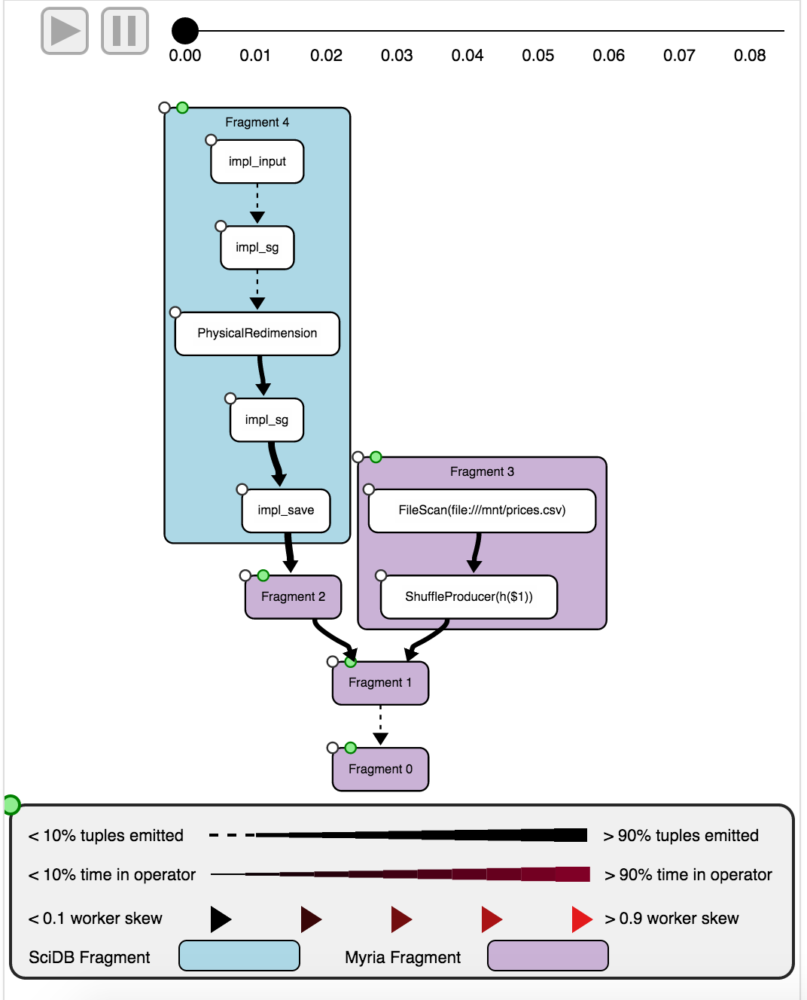

Hybrid databases have recently gained a lot of attention because of the promise they show in several prominent use cases in scientific data management. A hybrid distributed database system usually consists of multiple underlying databases with differing data models. In order to better understand such systems we present a query profiling and visualization tool for queries authored over these hybrid systems. Our approach is to extend an existing visualization tool for distributed databases by adding support for multiple underlying database systems.

A running version of HybridPerfopticon is hosted here.
The Myria database management system leverages Perfopticon as a query visualization tool (via the Myria webserver project). Since this project is a Perfopticon extension, we therefore elected to extend Myria-Web to demonstrate its features.
Accordingly, the installation process requires the following steps:
git clone https://github.com/CSE512-15S/fp-bhaynes-shrainik.git)git submodule init and git submodule update)raco submodule. This file is not required, but dramatically speeds up the parser load time (which happens for every request to the app). To generate it, run scripts/myrial examples/reachable.mylappengine/myria_web_main.py to point to a specific MyriaX engine (default=demo.myria.cs.washington.edu)dev_appserver.py /path/to/myria-web/appengine)http://localhost:8080/editor), making sure to select the profiling option